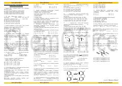

OKOrganik kimyo asosiy tushunchalari va testlar to'plami.
Ushbu qo'llanma organik kimyo faniga kirish, asosiy tushunchalar, izomeriya, uglerod atomlarining gibridlanishi va kimyoviy bog'larga oid testlar hamda nazariy savollarni o'z ichiga oladi. Material talabalar va kimyo fanini o'rganuvchilar uchun mustaqil tayyorgarlik ko'rishda yordam beradi.